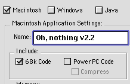

| Cross-Platform Compiling much improved |
This month, most of the DR2 updates were improvements to the Win32 compiler.
Though far from complete, this feature is getting better and better, and should (hopefully)
be completed soon. However, the same thing that happened to the Java compiler could
happen to the windows compiler. In case you've forgotten it, the Java Compiler decreased
the number of updates, because whenever a feature was added, it needed to be added three
times—once in the IDE, once in the Mac compiler, and once in the Java Compiler.
On a related note, the buid application dialog has been changed once
again (to the picture you see on the right). The Java compiler is back, so you can
once again put RB programs in your web pages. The same restrictions still apply though.
You can't have modal dialogs, or quit. However, even though the Java checkbox is
back, the "Java compatibility" check in the project settings window has
not reappeard.
I'll probably have a test of this once-dead compiler setting next
issue, so be on the lookout!
| REAL Software gets a color change |
On October 13, REAL Software changed the colors of REALbasic from blue
and black to green and black.(It went from REALbasic to REALbasic)
Oddly enough, RB's colors have been green and
black for much longer than you might realize. If you look at the about box in F1
and higher, it appears in green. Apparently the web site was simply the last part
to be updated.
| Smaller applications in the future? |
Recently, Geoff said that the compiler would be modified to only include
neccesary components in built applications. What does this mean? It means that your
compiled programs will be smaller. Currently, the compiler throws everything into
built apps. So, if all your project uses is pushbuttons, it will still include code
for handling sockets, sprite surfaces, and noteplayers—even though they're completely
superfluous.
In the new compiler, which should appear soon, only neccesary code will
be put into built apps.
| James Milne's next plugins |
After being pestered to oblivion, James Milne was coaxed into giving
me a "massive scoop", as he called it. Here are the specs on Control Pak
1, a five control plugin which should come out sometime this month:
| XBevelButton |
- An appearance manager bevel button. It can include a picture or text. |
| XDial |
- A dial control that can have tick marks, snapping, boundaries, and a HiFi look. |
| XSpinButton |
- A spin button similiar to the memory control panel's. |
| XTreeView |
- A control for doing trees using a "TreeViewNode" class for making nodes.
A tree view is another term for a hierarchial list (like the ones in finder list
views). |
| XDisclosure |
- A flippy triangle control that is appearance manager savvy. |
And thanks to the addition of picture support to the plugin architecture,
he will be coming out with a picture manipulation plugin soon.Go James!
He was also kind (or foolish) enough to give me the release dates
for the following plugins:
| MozPlug (an HTML decoder based on Netscape 5.0) |
Beta versions in November |
| SuperSocket (a socket that supports BSD, TCP/IP, etc.) |
Betas in late October |
| REAL3D (a complete 3D system for RB) |
betas in November |
| HotSocket (yet another Hotline Socket) |
indefinitely cancelled |
I've got to give James a virtual slap-on-the-back for these release
dates. It's impossible for him to come out with a product late! (He didn't specify
the YEAR). If only Apple could have done this with Copland...
James Milne has released a new and improved version of MadPlug. It now
installs PlayerPRO plugins into the extensions folder automatically, which means
that you don't have to include them with your project. It also changes the names
of several properties for no apparent reason. This version of MadPlug was scheduled
to arrive in July, but since then, James Milne has become smarter about release dates
(see the previous news article).
Much has happened for the Realbasic hotline servers this month. Here's
the gist of it:
The Realbasic BBQ, a popular alternate RB server, has mysteriously
dissappeared. For about a week, anyone who tried to log in was given an "Invalid
Login" error. Nowadays, it''s just gone. The RB BBQ: Early August to Early September.
RIP.
Also, the Realbasic café (cafe.realbasic.com) has reformed their
hierarchy of accounts. For a brief period, people intersted in becoming administrators
were asked to send in an application. People who were accepted have been given junior
admin accounts (which, in reality, only have a few more abilities than no account).
One of the major selling points of RB Pro (which is what DR2 will eventually
become) is database support. This is something that is delivered in Visual Basic
in the Professional and Enterprise versions, and it appears that Real SW is following
a similiar strategy.
We've got a feel for what this will be like with the Database object,
which was introduced in DR2r7 and 8. There are several commands that return database
objects. These include commands that open DBase databases (OpenDTFDatabase), Oracle
(OpenOracleDatabase), and OBDC (SelectOBDCDatabase).
For those who only need DBase support, and don't want to shell out
$300 for the Pro version may wish to consider CTable (not CTable control, which has
been reviewed), a set of classes that opens DBase's .dbf files, and allows you to
access them. CTable may be reviewed in a future issue.
A large update to httpSocket has been released. This popular class adds
allows you to use http easily and effectively using a public socket subclass. This
version is a total rewrite, and adds support for things such as referers, custom
client names, Headers, relative URLs, password authentication and the works. You
can get it at the RB Café (under reusable classes), or from www.nd.edu/~jvanderk/rb/
As you probably know, vector graphics are graphics that are defined by
their components (lines, circles, etc.), not their pixels (like a PICT is). This
usually means that they're smaller, and it also means that everything is editable—even
after you've drawn a hundred more shapes.
These advantages come with a drawback though—writing a vector graphics
editor is much more difficult than a bitmap editor. However, thanks to MiniVector,
a new reusable class, this is no longer a concern. MiniVector allows users to draw
ovals, lines, and rectangles directly on a canvas using any border size and fill,
and allows them to edit or remove the shapes later. It even comes with it's own file
format, and routines for drawing different sized versions of the image, in anti-aliased
or normal form.
I can hardly wait for release notes to come bundled with new releases
of DR2, so that some of the truly bizarre features can be explained. On top of the
list this month: The "New Class Interface" command in the File menu, and
the AE Recorder in the Window menu.x
A class interface seems to be a cross between a method and a class
with some things of its own thrown in. You can only have methods in it, and it needs
a super that is a class. However, it also has a property called "Interfaces",
which must contain the name of a class on the toolbar. I still haven't been able
to figure out what these do, but be on the lookout for more info in next issue!
There's a new reusable class out that decodes HTML, and put's it into
a styled editfield. It is rather limited though. It can't support things that editfields
don't support (read: everything but text styles and sizes), so it's not incredibly
useful. However, it does do a decent job of decoding very simple HTML. Then again,
when I fed it a fairly tough HTML document (a bunch of images and a complex table),
it spewed it out in 72-point Monaco. Oh well, I guess we'll just have to wait for
James Milne to come out with MozPlug.
Anyone who's ever used QBasic or GW-basic has undoubtedly used the PLAY
command. This command let you type something like PLAY "ABCDEFG#", and
it would do it. It could also change the tempo, length of notes, and octave. It was
a wonderful way to do music, and I haven't found a replacement in any language that
was nearly as good.
You might argue that the noteplayer control is better. After all, it
supports 128 instruments (many more if you count the drumkit instrument), and it
lets you set how softly or loudly the note is played. To that I respond, BIG DEAL!
I've always thought that the NotePlayer was a horrible implementation of Quicktime
Musical Instruments. In order to play ONE NOTE, you had to create a button to play
it, and a timer to stop it—more hassle than it was worth.
NotePlayer Kit, which is a new set of classes, aims to fix this. Along
with providing lists and popupmenu subclasses that list all 128 instruments by name,
it provides a NotePlayer subclass that has a Play command that's almost identical
to QBasic's, and doesn't require any setup. Hooray!
Here are all of the updates to RB since last issue.
Black version numbers indicate a normal release. Dark red indicates an unsupported
DR2 release.
| Version |
Date |
Summary |
| F9 |
9/11 |
Bug fixes
Delete button in CFM editor. |
| 1.0 |
10/8 |
Various bug fixes
Revised documentation and tutorials |
| DR2r10 |
9/11 |
Win32 font support, and editfield support.
Bug with multiple Win32 builds fixed. |
| DR2r11 |
9/23 |
Apple Event Template and AppleEventTarget objects
Apple Event Recorder in the window menu. |
| DR2r12 |
9/24 |
A specific bug fix for r11 |
| DR2r13 |
9/30 |
OpenOracleDatabase function
Improved plugin format (image support) and Win32 compiler |
| DR2r14 |
10/13 |
Not yet known |
| DR2r15 |
10/15 |
Not yet known |
| DR2r16 |
10/16 |
Bug fix for r15 (?) |